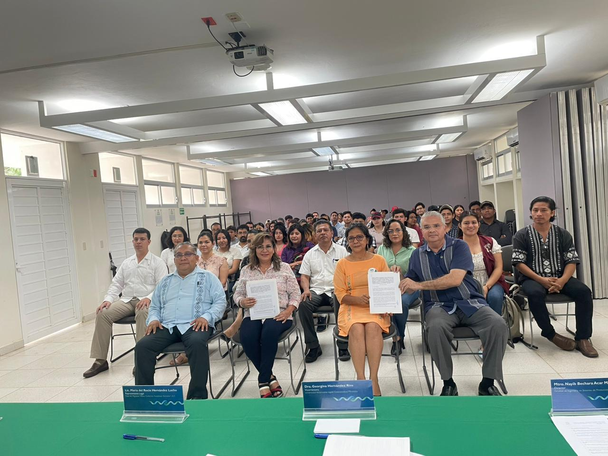
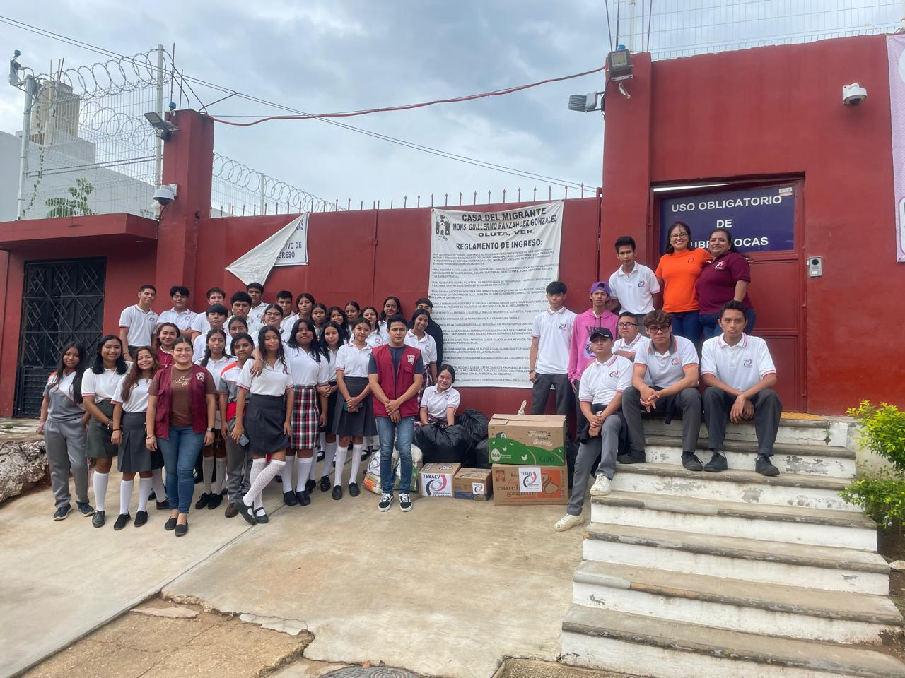
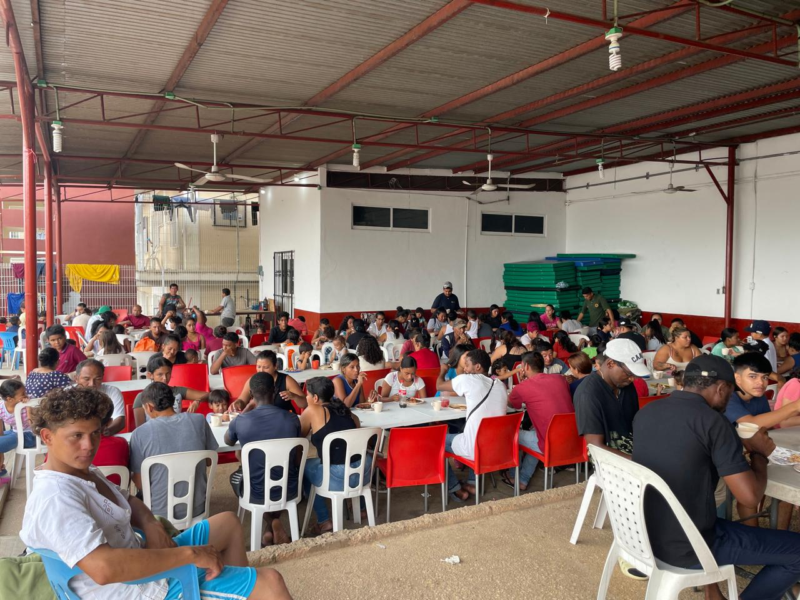

CONÓCENOS
Historia 🏛️
Origen, legado e importancia estratégica de la Casa del Migrante “Monseñor Guillermo Ranzahuer González”.
Inicio
Con más de 25 años de trayectoria, la Casa del Migrante implementa estrategias de atención integral para responder a las necesidades de la población migrante y solicitante de refugio, con enfoque en protección y derechos humanos.
Identidad y origen
El albergue inicia el 14 de septiembre de 1996 de manera incipiente, brindando atención a centroamericanos y nacionales.
Inicia con el Pbro. James Aguilar Cruz (apoyado por el laico Arcadio Ortiz Hernández). Da seguimiento el Pbro. Lucio Maldonado y se formaliza como obra diocesana con Monseñor Guillermo Ranzahuer González, nombrando coordinador diocesano al Diácono Eduardo Rodríguez Pérez. Actualmente: Pbro. Ramiro Baxin Ixtepan.
El 14 de septiembre de 2016 se reubica con instalaciones propias en Villa Oluta, integrándose al territorio parroquial de San Juan Bautista. Se consolida como Casa mixta: migrantes en tránsito y solicitantes de refugio (mujeres, NNA, embarazadas, personas enfermas y más), además de apoyo en casos de fallecimientos en la zona.
Contexto de creación
Por qué nace la necesidad de institucionalizar la ayuda humanitaria.
1 Escenario geográfico y social
Desde los años 80 y 90, el sur de Veracruz se consolidó como paso obligado hacia Estados Unidos. Puntos como Acayucan, Medias Aguas, Tierra Blanca y Coatzacoalcos se volvieron críticos por el tránsito de miles de personas en extrema vulnerabilidad, hoy también con rutas que incluyen Sudamérica y países extracontinentales.
2 El “Vía Crucis” del migrante
- Violencia: asaltos, extorsión, crimen organizado.
- Precariedad: dormir en vías del tren (“La Bestia”) o parques, con riesgo de enfermedad y desnutrición.
- Indiferencia legal: un marco migratorio punitivo, sin protocolos humanitarios del Estado.
3 Respuesta institucional
Bajo el liderazgo de Mons. Guillermo Ranzahuer, se reconoce que la caridad aislada no basta. Se impulsa la visión de pasar de “dar comida en la calle” a “ofrecer techo digno y protección legal”, con apoyo de comunidades parroquiales, jesuitas, sociedad civil y organismos.
4 Objetivo fundacional
No solo dar asilo: funcionar como observatorio de derechos humanos y santuario donde la dignidad sea reconocida por encima del estatus migratorio.
Importancia estratégica en la región
Razones geográficas, humanitarias y sociales.
1 El embudo de “La Bestia”
Oluta y Acayucan son puntos donde convergen rutas ferroviarias y carreteras del sur. Históricamente, aquí muchas personas intentan abordar el tren de carga. La Casa ofrece refugio vital antes de tramos más hostiles.
- INM: segunda estación migratoria más grande en la zona.
- Canalización: referencia para otras casas, consulados y COMAR.
2 Vulnerabilidad extrema
- Extorsiones y secuestros en rutas y vías.
- Agotamiento físico por viajes en condiciones infrahumanas.
- La Casa funciona como un oasis de seguridad: alimento y atención médica básica.
3 Asesoría jurídica y derechos humanos
Orienta sobre trámites migratorios y refugio ante COMAR, acompaña denuncias y conecta con organismos.
| Función | Importancia |
|---|---|
| Geográfica | Punto de conexión clave hacia el centro y norte de México. |
| Humanitaria | Único refugio formal de estancia larga con capacidad para 200 migrantes en esa zona específica de la ruta. |
| Social | Visibiliza la crisis migratoria ante la comunidad local, fomentando la empatía. |


